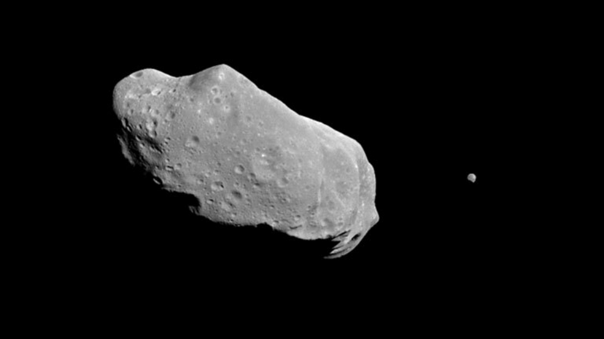

Los asteroides son cuerpos rocosos y metálicos más pequeños que los planetas que orbitan alrededor del Sol en el cinturón de asteroides entre Marte y Júpiter. También pueden encontrarse en otras partes del sistema solar, como en órbitas cercanas a la Tierra.
Los asteroides pueden variar en tamaño, desde unos pocos metros hasta varios kilómetros de diámetro. Algunas curiosidades sobre los asteroides son:
El asteroide más famoso es probablemente el asteroide Apophis, que se acercará a la Tierra en 2029 y ha sido objeto de preocupación debido a la posibilidad de que impacte con nuestro planeta. Afortunadamente, las probabilidades de que esto ocurra son muy bajas.
